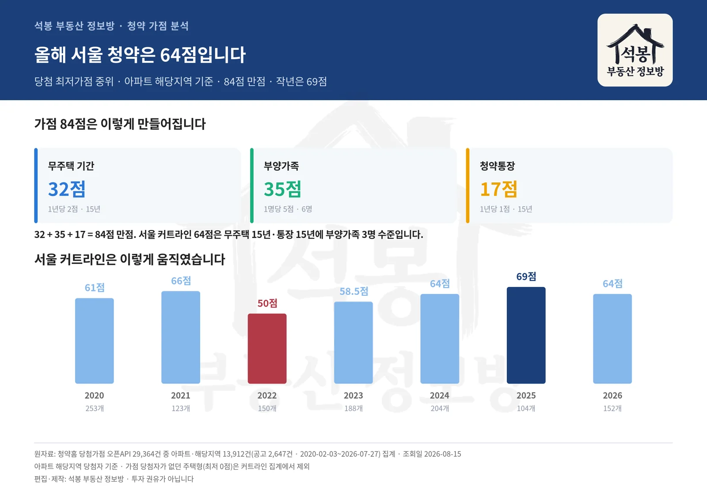
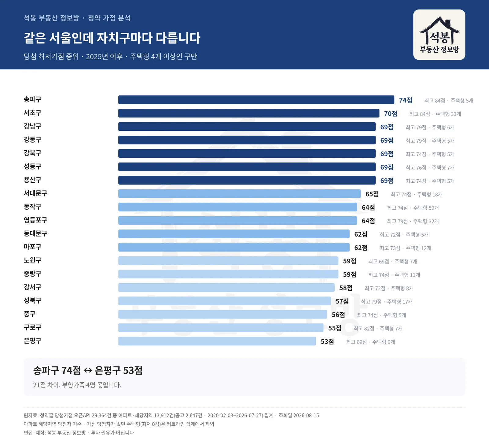
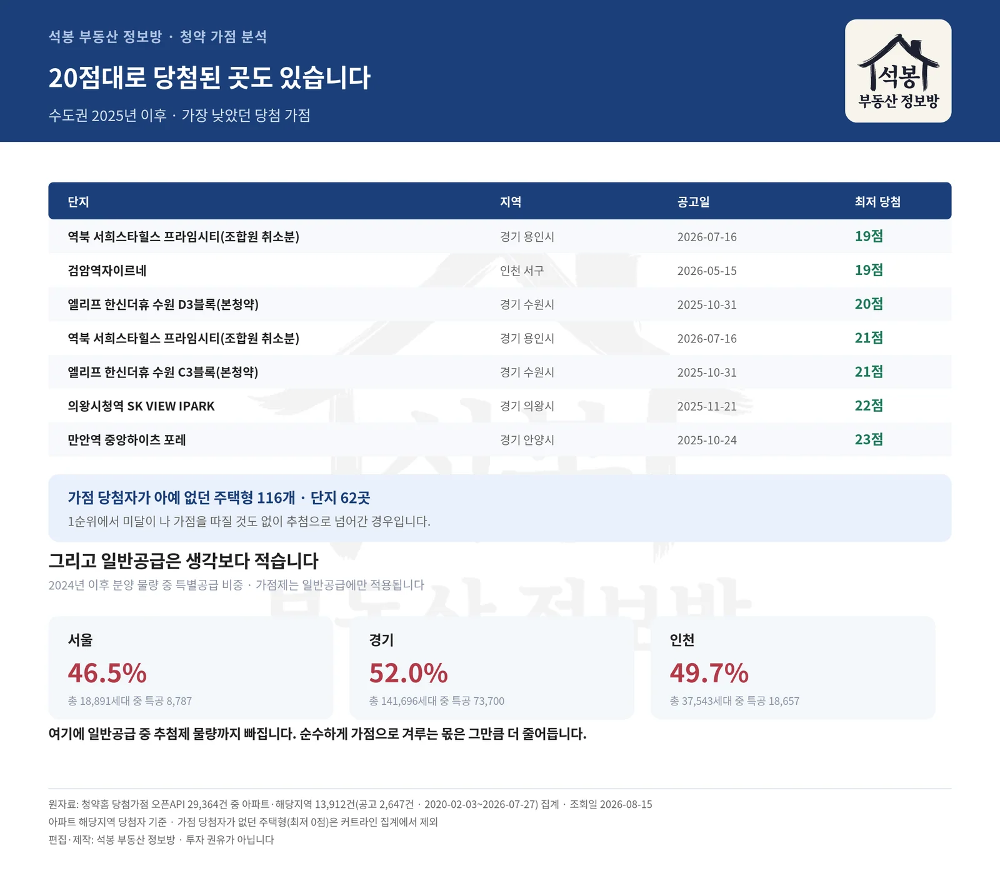

청약 가점은 84점 만점입니다. 그런데 "몇 점이면 되나"에 답하는 글은 대개 추정이거나 몇 년 전 이야기입니다. 청약홈이 공개하는 실제 당첨 가점(주택형별 최저·평균·최고) 29,364건을 받아 서울과 경기 수도권을 정리했습니다. 결론부터 말씀드리면 올해 서울은 64점이고, 자치구에 따라 스무 점 넘게 벌어집니다.
가점 84점은 이렇게 만들어집니다
무주택 기간 최대 32점(1년당 2점, 15년) + 부양가족 최대 35점(1명당 5점, 6명) + 청약통장 가입기간 최대 17점(1년당 1점, 15년). 주택도시보증공사 주택청약도우미 기준. 가점제는 투기과열지구·청약과열지역 물량에 적용되고, 추첨제 물량은 가점과 무관합니다.
50점까지 내려갔다가 다시 64점이 됐습니다
서울 아파트의 해당지역 당첨 최저가점 중위값입니다. 금리가 오르고 시장이 얼어붙었던 2022년에 50점까지 내려갔고, 작년에 69점으로 정점을 찍은 뒤 올해는 64점입니다.
연도
최저가점 중위
평균가점 중위
주택형 수
2020년
61점
63.8점
253개
2021년
66점
67점
123개
2022년
50점
54.3점
150개
2023년
58.5점
62점
188개
2024년
64점
66.8점
204개
2025년
69점
69점
104개
2026년
64점
66점
152개
64점이 어느 정도인지 감이 안 오실 수 있습니다. 무주택 15년(32점)에 청약통장 15년(17점)을 채우고도 부양가족이 3명(15점)은 있어야 나오는 점수입니다. 무주택 기간은 만 30세 또는 혼인신고일부터 세니까, 현실적으로 40대 후반 이상 4인 이상 가구 이야기입니다.

가점 구조와 서울 커트라인 추이
여기서부터는 회원에게 보여드립니다
카카오 로그인 3초면 전문을 읽을 수 있습니다. 무료입니다.
가입하시면 지역 시장조사 보고서(약식)를 2회 무료로 요청하실 수 있습니다.
이미 회원이면 같은 버튼으로 로그인만 됩니다
실제로 이 단지들은 이 점수에서 갈렸습니다
추정이 아니라 청약홈에 공시된 실제 당첨 가점입니다. 최저가점은 주택형마다 다르므로 단지별 중위값으로 정리했고, 그중 가장 낮았던 주택형과 가장 높았던 당첨자 점수를 함께 실었습니다.
단지
최저가점 (중위)
가장 낮은 주택형
최고 당첨
주택형
잠실 르엘 송파구 · 2025년 08월
74점
70점
84점
5개
아크로 드 서초 서초구 · 2026년 03월
74점
69점
84점
3개
반포 래미안 트리니원 서초구 · 2025년 10월
73점
70점
82점
7개
오티에르 반포 서초구 · 2026년 03월
71점
69점
79점
12개
북서울자이 폴라리스(보류지) 강북구 · 2026년 06월
70점
69점
74점
3개
고덕강일 대성베르힐 강동구 · 2025년 05월
69점
69점
79점
4개
힐스테이트 이수역센트럴 동작구 · 2025년 10월
69점
66점
74점
12개
오티에르 포레 성동구 · 2025년 06월
69점
69점
76점
7개
리버센트 푸르지오 위브 영등포구 · 2025년 06월
69점
69점
74점
5개
래미안 원페를라 서초구 · 2025년 01월
69점
69점
79점
11개
리버센 SK VIEW 롯데캐슬 중랑구 · 2025년 05월
69점
59점
74점
6개
역삼센트럴자이 강남구 · 2025년 12월
69점
69점
79점
6개
송파구 잠실 르엘과 서초구 아크로 드 서초가 74점으로 가장 높았습니다. 두 곳 모두 최고 당첨자는 84점 만점이었습니다.
만점자끼리 겨룬 주택형도 있습니다. 최저 당첨 가점이 84점이라는 건, 그 주택형에 지원한 사람 중 만점이 아니면 아예 못 붙었다는 뜻입니다. 전체 21개 주택형에서 만점 당첨자가 나왔고, 그중 3개 주택형은 최저마저 84점이었습니다. 서초구 아크로 드 서초 전용 59㎡(17.9평) C형, 강동구 VIORR 전용 84㎡(25.7평) P형, 그리고 서초구 래미안 원베일리 전용 84㎡(25.7평) D형이 그런 경우입니다.
같은 서울인데 자치구마다 스무 점 넘게 벌어집니다
2025년 이후 공고 기준입니다. 주택형이 4개 이상인 자치구만 실었습니다.
자치구
최저가점 (중위)
평균
최고 당첨
주택형
송파구
74점
74.7점
84점
5개
서초구
70점
71점
84점
33개
강남구
69점
70.4점
79점
6개
강동구
69점
70점
79점
5개
강북구
69점
69.5점
74점
5개
성동구
69점
70.8점
76점
7개
용산구
69점
69.3점
74점
5개
서대문구
65점
67점
74점
18개
동작구
64점
66점
74점
59개
영등포구
64점
67.2점
79점
32개
동대문구
62점
63.8점
72점
5개
마포구
62점
62.5점
73점
12개
노원구
59점
61.7점
69점
7개
중랑구
59점
63.2점
74점
11개
강서구
58점
63.5점
72점
8개
성북구
57점
61점
79점
17개
중구
56점
57.5점
74점
5개
구로구
55점
62점
82점
7개
은평구
53점
59점
69점
9개
송파구74점과 은평구53점의 차이가 21점입니다. 부양가족 네 명 차이입니다. 같은 서울에서 청약하더라도 어느 구를 노리느냐에 따라 필요한 점수가 완전히 달라진다는 뜻입니다.

서울 자치구별 당첨 커트라인
큰 평수가 더 어렵습니다
서울 2024년 이후 기준으로 전용 59㎡ 이하는 최저 64점인데, 전용 85㎡ 초과는 69점입니다. 소형이 경쟁률은 높아도 가점 문턱은 대형이 더 높습니다. 대형일수록 공급 자체가 적고, 부양가족이 많은 고가점자가 큰 집을 원하기 때문입니다.
면적
최저가점 중위
평균가점 중위
주택형 수
전용 59㎡ 이하
64점
65.9점
239개
전용 60~84㎡
64점
67점
184개
전용 85㎡ 초과
69점
71.8점
37개
경기와 인천은 사정이 다릅니다
서울에 인접한 곳일수록 서울과 비슷해집니다. 성남시가 64점으로 경기에서 가장 높고, 광명·과천이 뒤를 잇습니다. 반대로 의왕시는 29점입니다.
경기
최저가점
주택형
인천
최저가점
주택형
성남시
64점
19개
검단신도시
61.5점
4개
광명시
58점
19개
연수구
55점
13개
과천시
56.5점
8개
서구
43점
15개
안양시
51점
25개
부평구
36.5점
16개
고양시
48점
9개
미추홀구
36점
11개
용인시
48점
7개
김포시
46점
9개
광주시
45점
7개
부천시
42점
11개
수원시
42점
13개
남양주시
41점
8개
평택시
38점
5개
풍무역세권
34.5점
12개
구리시
34점
4개
의왕시
29점
7개
20점대로도 당첨된 곳이 있습니다
수도권 전체로 넓히면 이야기가 달라집니다. 2025년 이후 수도권에서 가장 낮은 당첨 가점은 이렇습니다.
단지
지역
공고일
최저 당첨
역북 서희스타힐스 프라임시티(조합원 취소분)
경기 용인시
2026-07-16
19점
검암역자이르네
인천 서구
2026-05-15
19점
엘리프 한신더휴 수원 D3블록(본청약)
경기 수원시
2025-10-31
20점
역북 서희스타힐스 프라임시티(조합원 취소분)
경기 용인시
2026-07-16
21점
엘리프 한신더휴 수원 C3블록(본청약)
경기 수원시
2025-10-31
21점
의왕시청역 SK VIEW IPARK
경기 의왕시
2025-11-21
22점
만안역 중앙하이츠 포레
경기 안양시
2025-10-24
23점
제일풍경채 의왕고천(본청약)
경기 의왕시
2025-04-18
23점
여기에 더해, 같은 기간 수도권에서 가점 당첨자가 아예 없던 주택형이 116개, 단지로는 62곳이었습니다. 1순위에서 미달이 나 가점을 따질 것도 없이 추첨으로 넘어간 경우입니다. 청약 가점이 낮다고 길이 없는 것은 아니라는 뜻입니다.

낮은 가점 당첨 사례와 특별공급 비중
한 가지 더, 일반공급은 생각보다 적습니다
가점제는 일반공급 물량에만 적용됩니다. 그런데 2024년 이후 서울에서 분양된 18,891세대 가운데 46.5%가 특별공급이었습니다. 경기는 52.0%, 인천은 49.7%입니다.
지역
총 공급
일반공급
특별공급
특공 비중
서울
18,891세대
10,104세대
8,787세대
46.5%
경기
141,696세대
67,996세대
73,700세대
52.0%
인천
37,543세대
18,886세대
18,657세대
49.7%
"서울에 몇 세대 분양"이라는 기사를 보시면 그 절반은 신혼부부·생애최초·다자녀 같은 특별공급이라고 생각하시면 됩니다. 여기에 일반공급 중에서도 추첨제 물량이 따로 빠지니, 순수하게 가점으로 겨루는 물량은 전체의 3분의 1도 안 되는 셈입니다. 커트라인이 높게 형성되는 이유가 여기에 있습니다.
정리하면
서울에서 가점만으로 노린다면 64점 안팎(작년 수준이면 69점), 강남 3구는 74점 이상을 봐야 합니다.
60점이 안 되면 서울 외곽(은평구·구로구 등)이나 경기 남부, 또는 추첨제·특별공급이 현실적인 길입니다. 가점은 공고마다 달라지므로 위 숫자는 최근 흐름을 보는 기준선입니다.
개인적인 생각을 덧붙이자면, 가점을 올리는 방법은 사실상 시간뿐입니다. 통장 기간과 무주택 기간은 기다리는 수밖에 없고 부양가족은 마음대로 되는 것이 아니니까요. 그래서 저는 점수를 억지로 맞추려 하기보다, 지금 내 점수로 승산이 있는 지역과 평형이 어디인지를 먼저 확인하시라고 말씀드립니다. 위 표가 그 기준선이 되었으면 합니다. 진행 중인 청약 일정은 우리 사이트 청약 페이지에서 매일 갱신됩니다.
원자료: 청약홈 당첨가점 오픈API 29,364건 중 아파트·해당지역 13,912건(공고 2,647건, 2020-02-03~2026-07-27) 집계 · 조회일 2026-08-15 · 가점 배점은 주택도시보증공사 주택청약도우미 기준
아파트 해당지역 당첨자 기준이며 가점 당첨자가 없던 주택형(최저 0점)은 커트라인 집계에서 제외했습니다 · 자치구·시군은 주택형 4개 이상인 곳만 실었습니다
편집·제작: 석봉 부동산 정보방 · 투자 권유가 아닙니다.